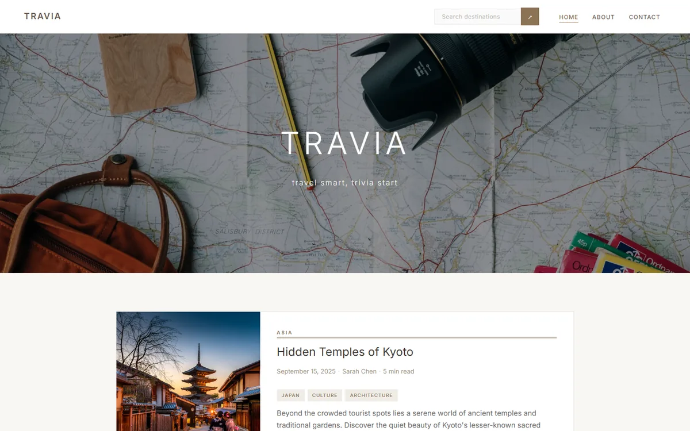

projects / travia journal
Travia Journal
A travel blog for everyone, not just travelers
- type
- website
- year
- 2026
- role
- owner
- stack
- Next.js 14 · JavaScript · Custom CSS +2 more

Overview
Travia is a place where anyone can sit down, read a story, and feel like they’ve been somewhere. Every post pairs a destination with a piece of trivia: something unexpected that makes you stop and think “I had no idea.”
The problem
You don’t need a passport or a boarding pass to feel something reading about hidden temples at the edge of Kyoto. I wanted a travel blog for readers, not just travelers.
What it does
- The reading experience: full stories with a sidebar
- Navigation and search, with Asia, Europe and Americas categories
- Sharing a story straight from its card
- An animated welcome screen on the home page
- A contact form handled by a serverless API
How it’s built
A full Next.js application with static generation, a serverless API, and everything styled by hand. No UI libraries, no shortcuts.
- Pages Router with static site generation
- Plain JavaScript, no TypeScript, to keep it approachable
- All CSS written from scratch in one stylesheet
- Hosted on Vercel with automatic deployment
Result
It started as a personal project, a way to learn, build and make something I’d actually want to open. It turned into one of the things I’m most proud of building.
Links
- Next.js 14
- JavaScript
- Custom CSS
- Vercel
- Unsplash
- Live site ↗ traviajournal.vercel.app
- Source code ↗ github.com/dvphnc/travia-journal